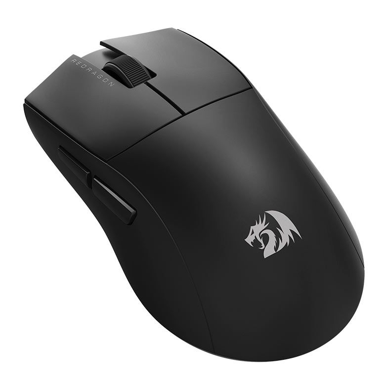
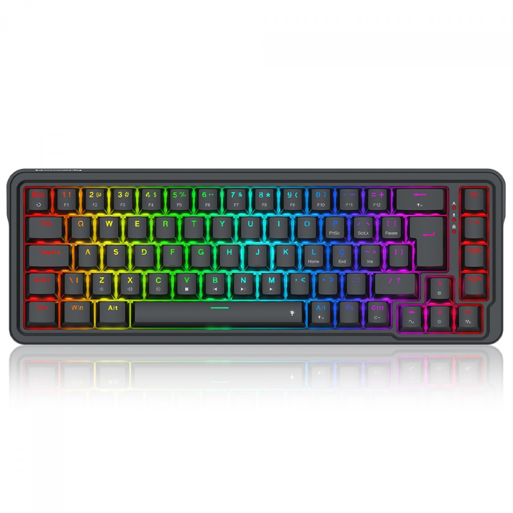
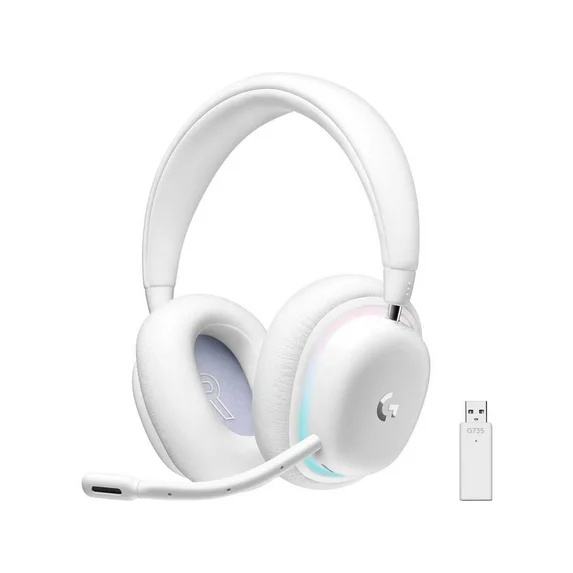
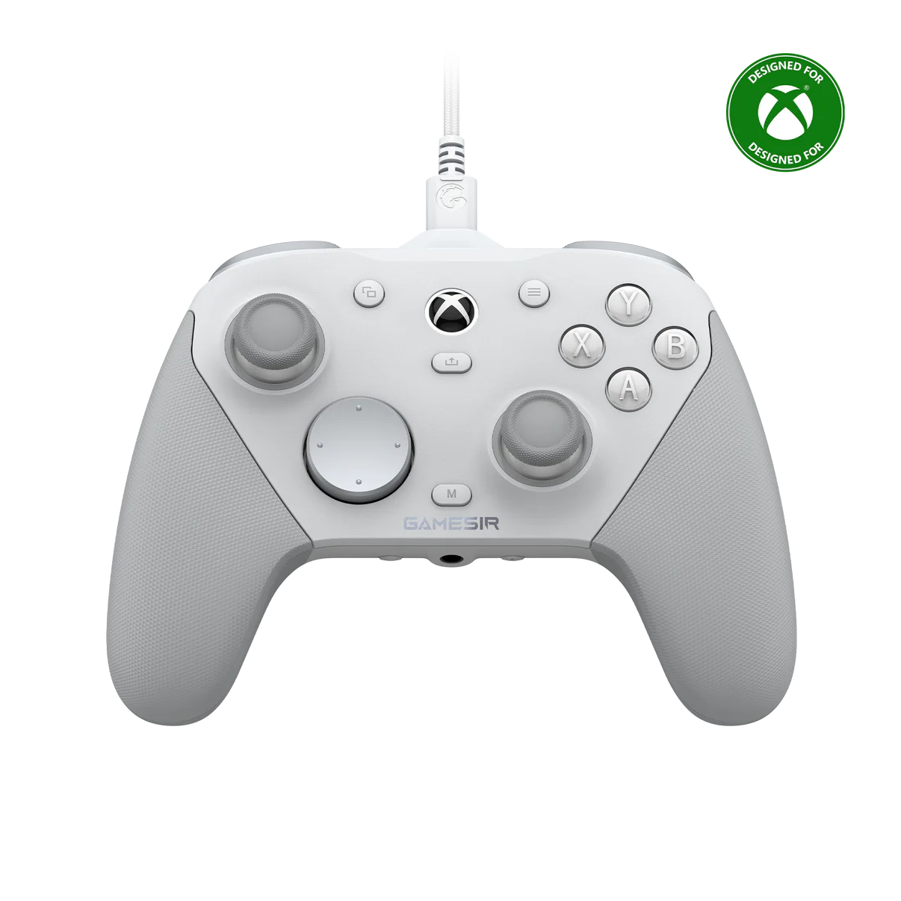

Em nossa loja, temos tudo que você precisa e quer no mundo da tecnologia!

O novo King Pro 4K foi projetado para trazer mais rapidez e precisão nas gameplays. Com 4K de Polling Rate, esse incrível mouse informa sua posição de rastreio a cada 0,25 milissegundos, tornando o tempo de resposta aos clicks ainda mais rápido!

Eleve seu setup com o teclado perfeito para gamers, streamers e quem ama um setup clean e poderoso!

Da Coleção Aurora, o G735 maximiza o conforto e o ajuste para todos os jogadores, inclusive de cabeças menores. Jogue de forma aconchegante com arco de cabeça macio e almofadas de ouvido giratórias. É perfeito para PC e dispositivos móveis com LIGHTSPEED e Bluetooth® sem fio. Na cor White Mist. Acessórios coloridos vendidos separadamente.

Conectividade Tri-Mode para Xbox, PC e Android：Compatível com Xbox (com fio), PC (2.4G sem fio + com fio) e Android (Bluetooth).Troca de modo rápida via botão físico, oferecendo máxima versatilidade para jogar em qualquer plataforma.

Todos os direitos reservados. Conteúdo produzido para fins estritamente acadêmicos.